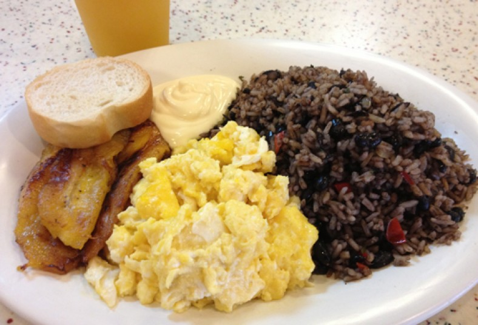
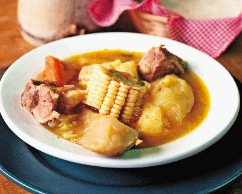
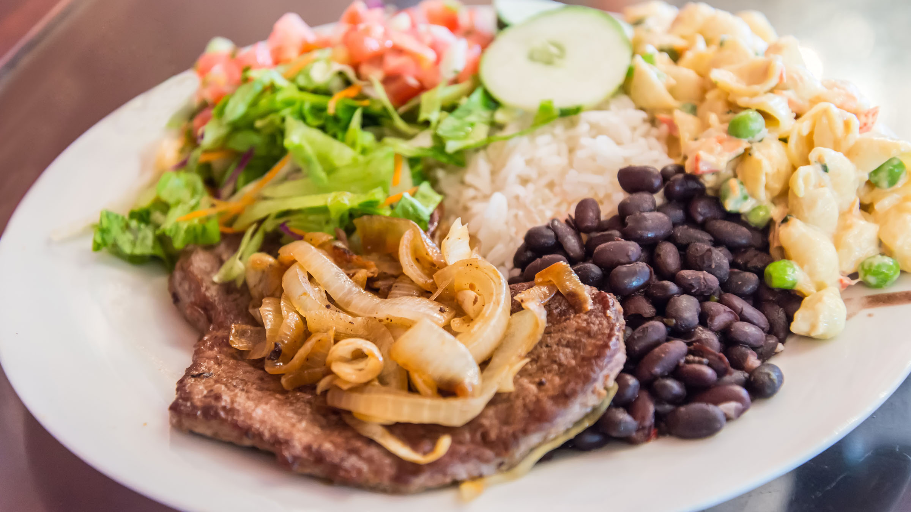

Platillos Tradicionales de mi Costa Rica
18/03/2018 - 13:00 PM
«gallopinto». Se puede comer en cualquier momento del día, aunque es particular hacerlo como desayuno. Existen tres versiones principales: la del Valle Central, donde el gallo pinto es más húmedo, menos grasoso, y es condimentado con chile, culantro y cebollas. Una variante incluye el agregado de salsa Lizano. Con el pasar de las décadas esta salsa se ha convertido en parte de la identidad del gallo pinto costarricense; la de Guanacaste, con un gallo pinto más grasoso y tostado; hecho con frijoles rojos. la de la costa caribeña (Puerto Limón y Puerto Viejo), conocido como «rice and beans» ('arroz y frijoles'), en el cual se cocen el arroz y los frijoles con leche de coco y se agrega chile habanero (conocido localmente como chile panameño).
17/03/2018 - 15:00 PM
Su historia comienza con un platillo judío llamado Adafina. Se piensa que al llegar a Costa Rica se modificó y se le agregaron los ingredientes que estuvieran a mano o que eran autóctonos del país. Se empezo a hacer en Costa Rica hace más de 100 años. Preparación El procedimiento de preparación tradicional es poner en una olla bien grande o espaciosa, preferiblemente una olla a presión la carne (tradicionalmente carne cesina, costilla de res, jarrete o alipego) con agua hasta cubrirla. Se agregan también especias (culantro, cebolla, sal, pimienta, orégano, apio), esto hasta que la carne esté bien suave. Luego se agregan las verduras hasta que estén bien suaves, con cuidado de que las verduras no pierdan su contextura y se deshagan en el caldo.
16/03/2018 - 10:00 AM
El contenido tradicional de un casado se compone de: frijoles, arroz, plátano, palmito, huevo y principalmente carne de res, pollo, cerdo o pescado. Las ensaladas que lo acompañan dependen de la disponibilidad de los ingredientes, que pueden ir desde la papa hasta la ensalada, entre muchas otras. Además, con regularidad se consume con alguna ración de pasta, que pueden ser una variedad de macarrones o canelones en salsa de tomate, así como una ensalada fría de caracolitos con mayonesa y atún. Asimismo se suele acompañar de algunas tortillas o pan blanco. El casado es uno de los tres principales platillos de la culinaria costarricense junto con el gallo pinto y la olla de carne ya que siempre representa una opción económica y típica en un menú del país.